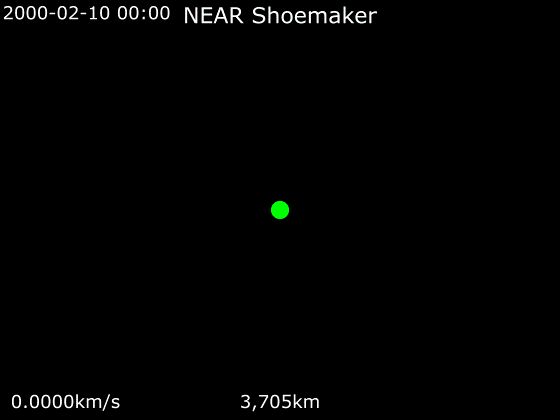

2차시 탐구 시뮬레이터
소행성의 자전주기와 모양 추론
탐구 질문빛의 변화만으로 추론한 에로스의 자전주기와 모양은 실제와 얼마나 맞을까?
학습목표 1여러 밤의 관측 자료를 위상으로 접어 소행성의 자전주기를 구할 수 있다.
학습목표 2AI가 낸 분석 결과를 자료와 물리적 근거로 검증할 수 있다.
학습목표 3모형을 관측에 맞추어 소행성의 모양을 추론하고 탐사선 결과와 비교할 수 있다.
주기 맞추기
학습목표 1 · 1975년 1월 다섯 밤 · 589점주기 P
시간 직접 입력
흩어짐 (작을수록 잘 모임)—
| 주기 (h) | 흩어짐 |
|---|
AI 답 검증
학습목표 2 · AI가 낸 분석 결과를 자료와 물리로 확인AI 답변 사례
요청 “첨부한 CSV는 소행성 에로스를 1975년 1월 다섯 밤 동안 측광한 자료입니다. 자전주기를 구해 주세요.”
AI가 작성한 분석 코드
import pandas as pd
from astropy.timeseries import LombScargle
d = pd.read_csv('eros-1975-five-nights.csv')
t = (d.JD_light_time_corrected - d.JD_light_time_corrected.min()) * 24
m = d.relative_mag - d.groupby('night').relative_mag.transform('mean')
f, p = LombScargle(t, m).autopower(minimum_frequency=1/8, maximum_frequency=1/2)
print(f'자전주기: {1/f[p.argmax()]:.3f} 시간')
실행 결과 자전주기: 2.632 시간
AI의 결론 “에로스의 자전주기는 약 2.63시간입니다.”
교실에서 직접 AI에 물어보기
다섯 밤 CSV와 요청문을 학교에서 허용한 AI에 넣고 답을 비교합니다.
① AI 값으로 접기 · ② 내 값으로 접기
③ 판정 · ④ 고쳐 쓰기
두 흩어짐이 거의 같다면 자료만으로는 정할 수 없음 → 1차시의 모양별 밝기 곡선(길쭉한 모양은 한 바퀴에 극대 2번)을 근거로 판정
모형 맞추기
학습목표 3 · 길쭉한 소행성 모형을 관측 곡선에 맞추기모형과 관측의 차—
더 해 보기: 보는 방향
1975년 1월 지구는 에로스를 θ ≈ 85°(거의 적도 쪽)에서 보았다. θ를 바꿔도 비슷하게 맞출 수 있는지 확인하기.
탐사선과 비교·정리
학습목표 3 · 빛으로 추론한 값과 탐사선이 직접 본 값NEAR 슈메이커가 본 에로스


2000년 2월 14일 궤도 진입, 약 1년 동안 표면을 촬영하며 크기 34.4 × 11.2 × 11.2 km, 자전주기 5.270시간을 측정